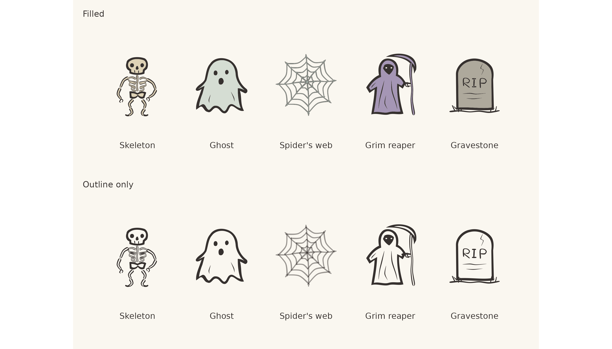
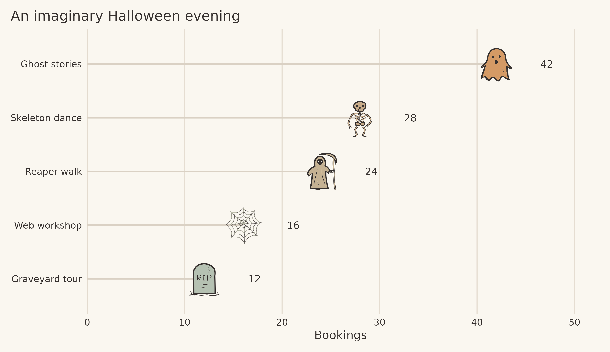

A ghost, a skeleton and a grim reaper have found their way into ggfoundry. A spider’s web and a gravestone complete a small Halloween set, with the same uneven curves and loose ink lines as the package’s existing shapes.
The five shapes are available in the development version. Their outlines and interiors can be coloured separately, and a transparent fill keeps the drawing visible. That makes them useful for a seasonal plot, a palette experiment, or a suitably spooky annotation.
Try the development version
Install the Dev branch from GitHub, then restart R if
ggfoundry is already loaded:
pak::pak("cgoo4/ggfoundry@Dev")
library(ggplot2)
library(ggfoundry)
library(tibble)
library(dplyr)
library(forcats)
halloween <- subset(shapes_cast(), set == "halloween")
halloween$shape
#> [1] "ghost" "gravestone" "grimreaper" "skeleton" "spiderweb"This set is part of development version 0.4.0.9000; the
published CRAN version 0.4.0 remains unchanged.
Meet the shapes
The names to use in a plot are skeleton,
ghost, spiderweb, grimreaper, and
gravestone. The skeleton has a large skull and sparse ribs,
the ghost a billowing hem, and the web skew spokes with sagging threads.
A crooked hood and sweeping scythe identify the reaper; the gravestone
has an uneven arch and hand-lettered inscription.
Here they are with filled interiors and with outlines alone:
shape_names <- c("skeleton", "ghost", "spiderweb", "grimreaper", "gravestone")
shape_labels <- c(
"Skeleton",
"Ghost",
"Spider's web",
"Grim reaper",
"Gravestone"
)
ink <- "#36312F"
paper <- "#FAF7F0"
gallery <- tribble(
~x , ~shape , ~label , ~appearance , ~fill ,
1 , "skeleton" , "Skeleton" , "Filled" , "#DED2B6" ,
2 , "ghost" , "Ghost" , "Filled" , "#D5DDD3" ,
3 , "spiderweb" , "Spider's web" , "Filled" , "#AFBEB6" ,
4 , "grimreaper" , "Grim reaper" , "Filled" , "#A596B5" ,
5 , "gravestone" , "Gravestone" , "Filled" , "#AEA99C" ,
1 , "skeleton" , "Skeleton" , "Outline only" , NA ,
2 , "ghost" , "Ghost" , "Outline only" , NA ,
3 , "spiderweb" , "Spider's web" , "Outline only" , NA ,
4 , "grimreaper" , "Grim reaper" , "Outline only" , NA ,
5 , "gravestone" , "Gravestone" , "Outline only" , NA
)
ggplot(gallery, aes(x, 1)) +
geom_casting(aes(shape = shape, fill = fill), colour = ink, size = 0.56) +
geom_text(aes(y = 0.28, label = label), colour = ink, size = 3.6) +
scale_shape_identity() +
scale_fill_identity(na.value = NA) +
facet_wrap(~appearance, ncol = 1) +
coord_fixed(xlim = c(0.35, 5.65), ylim = c(0, 1.7), expand = FALSE) +
theme_void(base_size = 13) +
theme(
strip.text = element_text(hjust = 0, colour = ink, margin = margin(b = 10)),
panel.spacing = grid::unit(1, "lines"),
plot.background = element_rect(fill = paper, colour = NA),
plot.margin = margin(12, 12, 12, 12)
)
The five Halloween shapes with filled interiors and with fill = NA.
The ghost, gravestone and reaper have broad areas for
fill. The skeleton’s bones and the web’s threads have much
narrower interiors, so changing their fill produces a subtler effect.
Give those two shapes enough room for their details to read.
An imaginary Halloween evening
Suppose a village is planning five Halloween activities. The booking counts below are fictional demonstration data. Each shape identifies an activity, while its horizontal position shows the number of bookings.
events <- tribble(
~activity , ~shape , ~bookings ,
"Skeleton dance" , "skeleton" , 28 ,
"Ghost stories" , "ghost" , 42 ,
"Web workshop" , "spiderweb" , 16 ,
"Reaper walk" , "grimreaper" , 24 ,
"Graveyard tour" , "gravestone" , 12
) |>
arrange(bookings) |>
mutate(activity = fct_inorder(activity))
ggplot(events, aes(bookings, activity)) +
geom_segment(
aes(x = 0, xend = bookings, yend = activity),
colour = "#DAD1C4",
linewidth = 0.8
) +
geom_casting(aes(shape = shape, fill = bookings), colour = ink, size = 0.17) +
geom_text(
aes(label = bookings),
nudge_x = 4.5,
hjust = 0,
colour = ink,
size = 4
) +
scale_shape_identity() +
scale_fill_gradient(low = "#B5C1B2", high = "#D49A65", guide = "none") +
scale_x_continuous(
limits = c(0, 52),
breaks = seq(0, 50, 10),
expand = expansion(mult = 0)
) +
scale_y_discrete(expand = expansion(add = 0.65)) +
labs(title = "An imaginary Halloween evening", x = "Bookings", y = NULL) +
theme_minimal(base_size = 13) +
theme(
text = element_text(colour = ink),
axis.text = element_text(colour = ink),
panel.grid.major.y = element_blank(),
panel.grid.minor = element_blank(),
panel.grid.major.x = element_line(colour = "#E5DDD1"),
plot.background = element_rect(fill = paper, colour = NA),
panel.background = element_rect(fill = paper, colour = NA),
plot.title.position = "plot",
plot.margin = margin(12, 18, 12, 12)
)
Fictional booking counts. Shape identifies the activity; position and labels show the count.
The shapes form a nominal set: choose one for each category with
scale_shape_manual(), or use
scale_shape_identity() when the data already contain their
names, as above. Continuous fill is resolved for each
observation, so the interior colour can vary along the booking
scale.
For a simpler treatment, set fill = NA or
fill = "transparent". The outline and its internal marks
remain visible. size controls the shape relative to its
plotting panel, so review the result at the dimensions at which readers
will see it.
The existing pumpkin and jackolantern
shapes in the food set make useful companions. A seasonal
plot can mix shapes across sets; shapes_cast() keeps their
names close to hand.